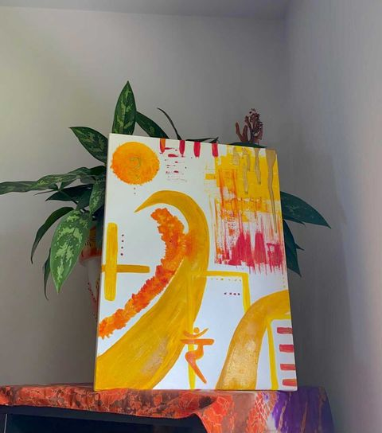

I've been doing art my entire life. When I was young, I remember ripping pictures and words out of magazines and making collages. But I've been very on and off with it. It's only been a year and a half since I started taking it seriously. Doing it more consistently.
I remember in high school, I would show a painting I was doing on Snapchat. A couple people would tell me these are really good, you should be more vocal about this. There's this one friend, especially who would always tell me to sell my art, to do more with my art.
I would always make excuses. Shipping is so expensive, I don't have a nice camera to take a picture of my art, etc. I really wasn't confident about my art at all. Other people were more confident in my art than I was. I took art more seriously because of my friends pushing me, they really saw something in my work that I was too afraid to recognize.
When I share my art, even now, I still get nervous because it makes me feel incredibly vulnerable. I get a feeling in my stomach that's telling me that 'maybe I shouldn't include this or that since I'm posting this online'.
But the fact that this is uncomfortable pushes me. I hate sharing my art on Instagram, but I still do it anyway just because I'm facing me being uncomfortable. I'm reaffirming to myself that my art matters to me, that my art is me.
There are always going to be people who don't like my art, and that's okay. I'm making art for myself, and not for anybody but myself. Being public about my art has made me more confident about my art. I know my art is good now, and I know it can be better if I keep practicing. The more I post, the more it pushes me to practice.